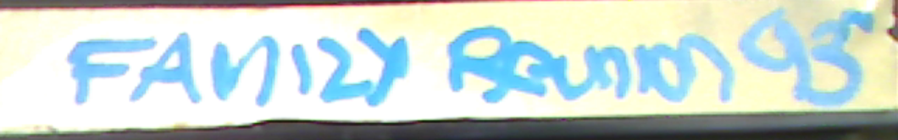
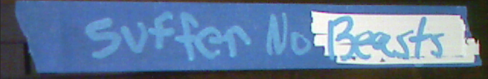
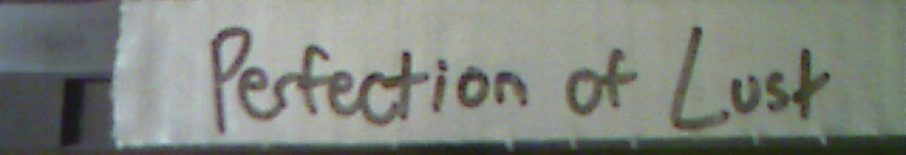
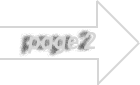

LostTapes.0021
'Umysł Nie Może Odzobaczyć Tego, Co Zobaczył.'
Transcendencja Locke'a - 2004, 3 godziny 10 minut
Zakazany film dokumentalny o amerykańskim naukowcu Peterze Locke, który przeszedł na stronę nazistów podczas II wojny światowej. Zakazany na całym świecie z powodu silnej nazistowskiej propagandy. Pozyskany z prywatnej kolekcji

Spotkanie Rodzinne 93' - 1993, 10 minut
Nagranie wideo z ręki zrobione przez dziecko filmujące, jak zabija swoich rodziców. Znalezione przez anonimowego darczyńcę na strychu opuszczonego domu. Wygląda bardzo realistycznie, chociaż nigdzie nie można znaleźć niczego związanego z taką zbrodnią
Równość Nuklearnej Zimy - 1982, 1 godzina 35 minut
Film z gatunku fikcji spekulatywnej, w którym zimna wojna doprowadziła do ogólnoświatowej katastrofy nuklearnej. Skupia się na prawdziwych potężnych postaciach w USA cierpiących szczególnie w jej następstwie

Nie Znoś Żadnych Bestii - 1975, 1 godzina 3 minuty
Obrazowe, gloryfikowane nagrania autentycznych okrucieństw wojennych z Wietnamu, połączone w fikcyjną narrację o inwazji kosmitów. Niewydany z powodu skrajnego rasizmu i prawdziwych przedstawień przemocy

Cesarz Snów - 1998, 2 godziny 1 minuta
"Fikcyjne" wideo instruktażowe krok po kroku, jak wykorzystać hipnozę i narkotyki do zbudowania własnego kultu. Przedstawione metody to sprawdzone techniki i obejmują czyny przestępcze

Stając Się Moim Końcem - 1993, 2 godziny 17 minut
Nagranie nienazwanego artysty, który powoli zatruwa się na śmierć przed kamerą. Filmował siebie przez okres 1 miesiąca w celu stworzenia arcydzieła na "nieodkrytym terytorium" śmiertelności

Perfekcja Żądzy - 2020, 1 godzina 48 minut
Dokument o ekstremalnych procedurach modyfikacji ciała obejmujących traumatyczne okaleczenia oczu, pokazujący zabiegi graficznie i w całości

Bóg Bez Wstydu - 1963, 2 godziny 40 minut
Niewydany fikcyjny epos opowiadający o małomiasteczkowym kaznodziei, który zyskuje moce Jezusa po tym, jak został uratowany przed śmiercią przez anioła. Zakazany przez grupy religijne na całym świecie z powodu antychrześcijańskiej retoryki oraz z powodu niezwiązanych zarzutów o publiczne nieobyczajne zachowanie wobec głównego aktora

Prawdziwa Rodzina Królewska - 1997, 3 godziny 45 minut
Zakazany (i uważany za zniszczony) materiał paparazzo przedstawiający członków europejskiej rodziny królewskiej za kulisami, w tym nielegalne akty rytualne i zażywanie narkotyków. Oryginalny twórca zniknął w tajemniczych okolicznościach

Chichotek - 2006, 1 godzina 43 minuty
Zakazany horror, w którym dentysta obezwładnia swoich pacjentów za pomocą stężonego gazu rozweselającego i torturuje ich, podczas gdy oni bezradnie się śmieją. Zakazany po zakończeniu kręcenia, gdy reżyser został oskarżony o napaść i pobicie przez aktorów, którzy skarżyli się na jego "metodę reżyserii" wykorzystującą prawdziwe znęcanie się fizyczne
